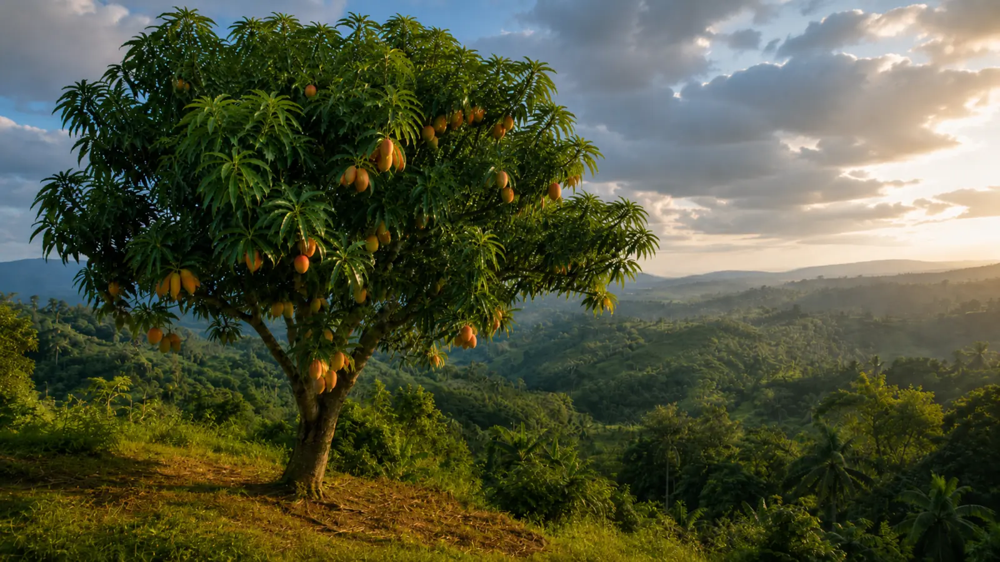

2000 v. Chr.
Roots before routes
VON DER
WURZEL IN
DIE WELT.
Eine Frucht mit mehr als 4.000 Jahren Geschichte — gewachsen in Hitze, getragen von Handel und immer wieder neu interpretiert.

[ ANBAU ]
Geduld
wird saftig.
Mangobäume lieben Wärme, Licht und eine ausgeprägte Trockenzeit. Veredelte Bäume tragen oft nach drei bis fünf Jahren. Ihre Früchte reifen über Monate — jede Sorte mit eigenem Duft, eigener Textur, eigener Haltung.
24–30 °C
Wohlfühltemperatur3–5 Jahre
bis zur ersten Ernte
Wohlfühltemperatur3–5 Jahre
bis zur ersten Ernte
A moving fruit
10. Jh.
Auf neuen Routen
Händler bringen Mangos über Seewege nach Ostafrika und in den Nahen Osten.16. Jh.
Globaler Aufbruch
Portugiesische Handelsnetze tragen die Frucht weiter nach Brasilien.Heute